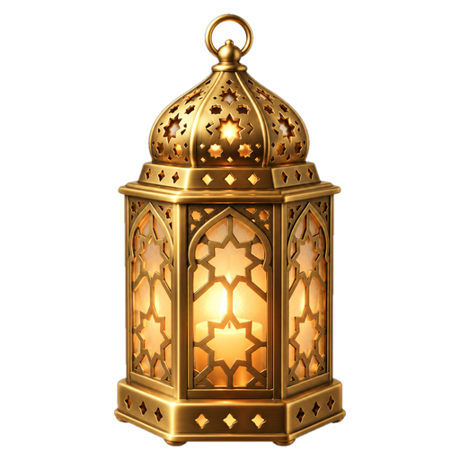

All day, in every app
Content shield
Adult sites, words and images are closed in every app and browser on the phone.
- Sites, in all apps
- Words, in Arabic and English
- Images, checked on the phone
Hisn closes adult content on your phone, stays with you through the hard minute, and brings you nearer to Allah every day. No ads and no subscription.
 AdhkārDu’a
AdhkārDu’a Progress
Progress Qur’an
Qur’anTell the believing men to lower their gaze and be modest. That is purer for them. Lo! Allah is aware of what they do.
AN-NŪR 24:30 · TRANSLATION: PICKTHALL
Hisn works under your phone’s own settings. It closes what leads to the worst step, and it helps you most in the minute it matters.
All day, in every app
Adult sites, words and images are closed in every app and browser on the phone.

23:40, alone
One red button for the hard minute. Your own promises first, then breathing with dhikr.

After ʿIshāʾ
A short pause with dhikr before the apps you choose, and quiet nights after ʿIshāʾ.
In a weak moment
Lock your rules so a weak moment can’t loosen them. Choose one person you trust.
Each of them finds the tools that fit in Hisn.
You fear Allah, you keep falling, and you want to stop for good.
You want to guard your marriage and lower your gaze.

You want a phone that helps you obey Allah, not one that pulls you away.

You want a safer phone for your children at home.
The red button is on every screen of the app. This is what happens next.
Hisn shows the promises you wrote at the start, and the verse “Then surely I am nigh.” (2:186)
Three slow breaths. Say astaghfirullāh as you breathe out.
Hisn sends no notifications for ten minutes while you pray.
Your past days are kept. You start again tonight.
Hisn counts every clean night, and with it the prayers you kept, the pages you read and the times you turned back. A slip never erases what came before.
7 nightsFirst week
14 nightsBright lamp 30 nightsA full month40 nightsForty nights
30 nightsA full month40 nightsForty nights 100 nightsA hundred nights
100 nightsA hundred nights 365 nightsA year in the fortress
365 nightsA year in the fortressAt each stop you receive one of these objects to keep. It is a gift for you alone: no ranks, no leaderboard, and no comparing with anyone.
Three colour themes. Tap one to see it on this page.
No subscription. Hisn is kept going by donations, and its code is open for anyone to read.
Android 6.0 and newer. Phone makers’ extra settings explained inside.
DownloadComing to more stores: Google Play Huawei AppGallery and more
Screen Time and a content filter, with Hisn on top.
A menu bar shield for every browser on the Mac.
A shield for every browser on a Windows PC.
Chrome, Edge and Firefox, on Mac, Windows or Linux.
No. Pages, words and images are checked on your phone, and nothing about your browsing is sent anywhere.
Yes. At the start Hisn asks whether to call you brother or sister, and speaks to you that way.
No blocker can. Hisn closes the common doors and tells you plainly what each layer does not cover, so you can close the rest yourself.
Press the red bar, then “I slipped”. Your nights of light are kept, and Hisn shows three steps back: istighfār, wuḍūʾ and two rakʿahs, and closing the door it came through.
Hisn is made for the sake of Allah, and its code is open.